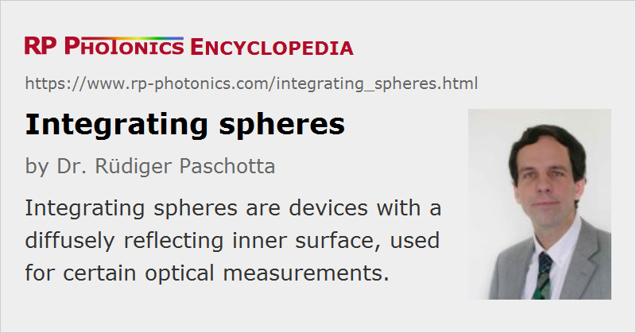

Integrating Spheres
Definition: devices with a diffusely reflecting inner surface, used for certain optical measurements
Alternative term: Ulbricht spheres
German: integrierende Kugel, Kugelphotometer
Categories: photonic devices, optical metrology
How to cite the article; suggest additional literature
Author: Dr. Rüdiger Paschotta
An integrating sphere (also called Ulbricht sphere after Friedrich Ulbricht) is an optical device for various purposes such as
- measuring the radiant flux (optical power) from a laser diode, light-emitting diode (LED) or bulb
- measuring the transmittance or reflectance of optical components, even when they partly scatter the light
- illuminating some device very uniformly
- creating accurately defined color mixes (mostly in colorimetry)
- depolarization of light
The device (see Fig. 1) is a hollow sphere with a diffusely reflecting internal surface, typically two or more small openings (ports) for introducing light or attaching a photodetector, and often some so-called baffles, which are light barriers used to prevent direct illumination of a detector by a light source. The arrangement causes many diffuse reflections of the introduced light before it reaches a detector, so that the light flux becomes very uniform at the detector, and nearly independent of the spatial and polarization properties of the introduced light: the detected radiant flux (optical power) depends only on the total introduced power. In that way, the total output power of a light source can be measured, even if the beam divergence is fairly large. Such a device, consisting of an integrating sphere and a photodetector, is called an integrating sphere photometer.
Under certain simplifying assumptions, such as Lambertian scattering characteristics of the inner sphere surface with a uniform reflectivity ρ and a negligible fraction of the sphere surface covered with ports or other obstructions, the irradiance obtained at a small output port can be calculated as
where Φ is the radiant flux injected through another port. The ρ-dependent second term can become quite large in cases with high reflectivity, e.g. 99 for ρ = 0.99. This is essentially because of a large number of reflections of light in such situations. However, the more closely ρ approaches unity, the larger is the influence of the ports, i.e., the less accurate the estimate is.
Apart from such measurement purposes, an integrating sphere can be used to illuminate a device very uniformly. This can be important e.g. for testing the homogeneity of digital imaging equipment (e.g. CCD arrays).
Ideally, the coating on the inner side of the integrating sphere has a very high reflectivity over the required wavelength range, and the reflection is very diffuse. If the optical losses in the sphere and through the small ports are low, the multiple reflections can lead to a fairly high optical intensity inside the sphere and consequently to a high optical efficiency, even if the sphere is much larger than the light source and the detector.
Suppliers
The RP Photonics Buyer's Guide contains 22 suppliers for integrating spheres. Among them:
Questions and Comments from Users
Here you can submit questions and comments. As far as they get accepted by the author, they will appear above this paragraph together with the author’s answer. The author will decide on acceptance based on certain criteria. Essentially, the issue must be of sufficiently broad interest.
Please do not enter personal data here; we would otherwise delete it soon. (See also our privacy declaration.) If you wish to receive personal feedback or consultancy from the author, please contact him e.g. via e-mail.
By submitting the information, you give your consent to the potential publication of your inputs on our website according to our rules. (If you later retract your consent, we will delete those inputs.) As your inputs are first reviewed by the author, they may be published with some delay.
See also: photodetectors, photometers
and other articles in the categories photonic devices, optical metrology
|  |
If you like this page, please share the link with your friends and colleagues, e.g. via social media:
These sharing buttons are implemented in a privacy-friendly way!